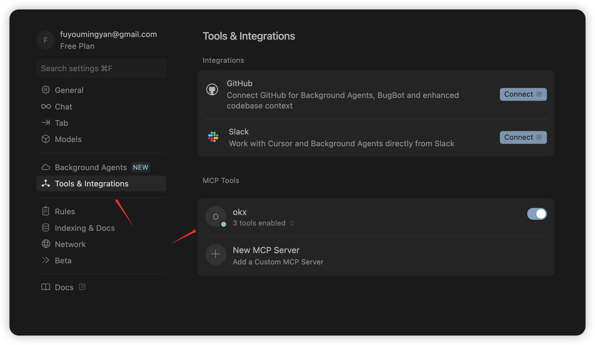
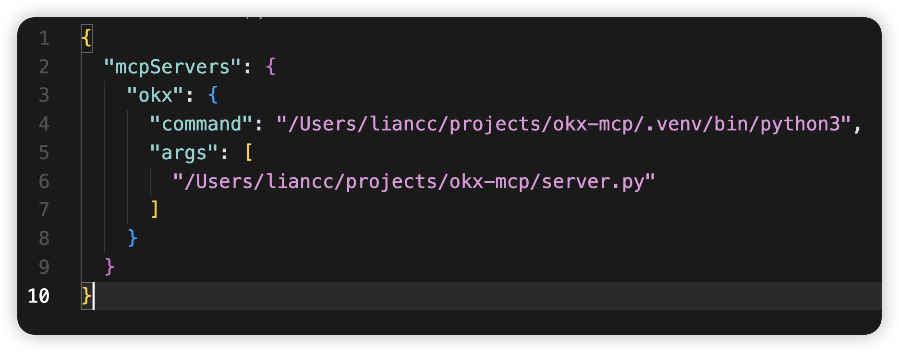
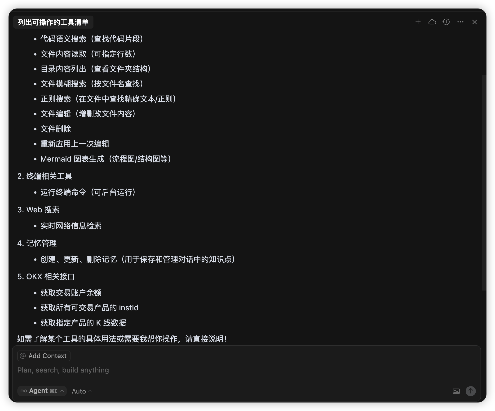
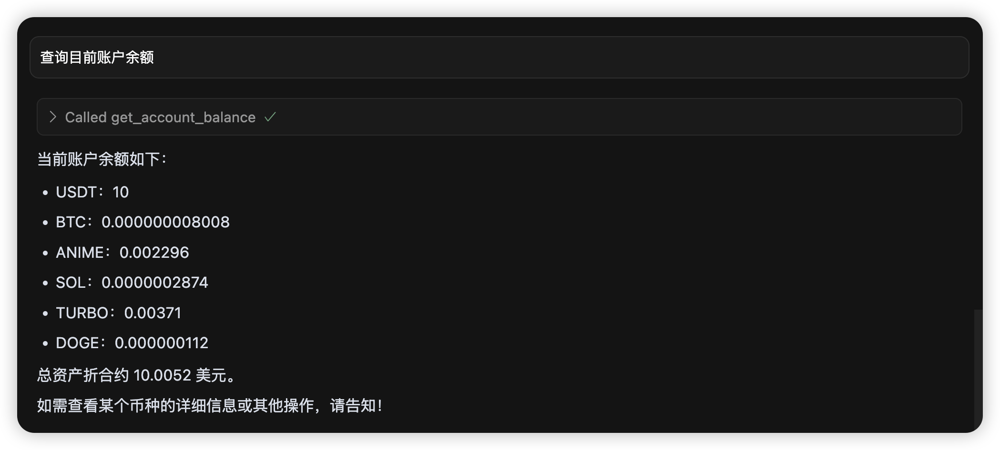
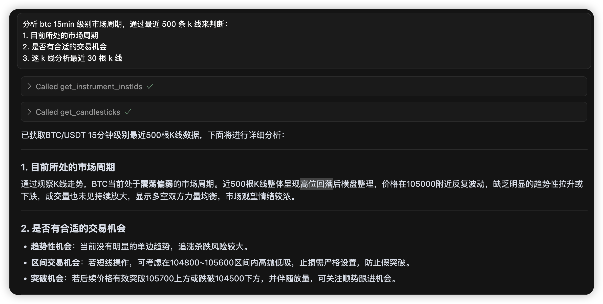
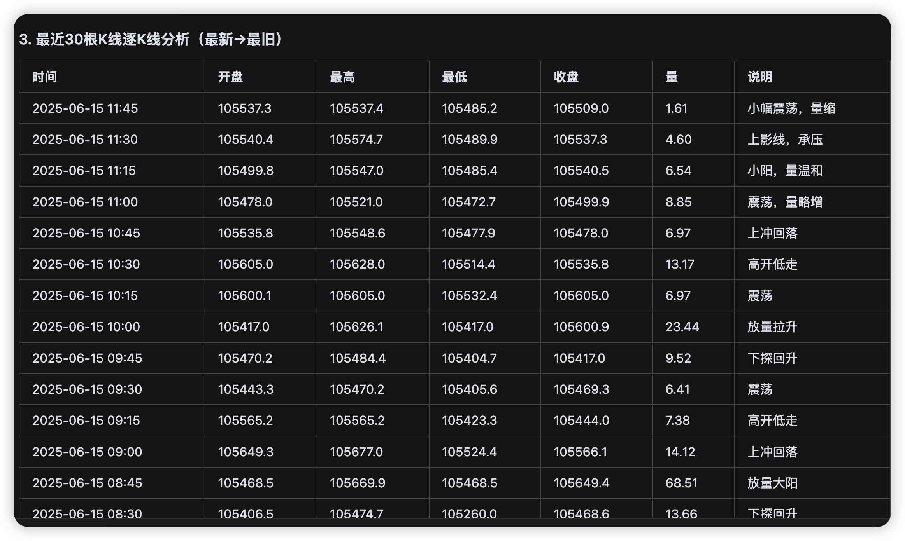
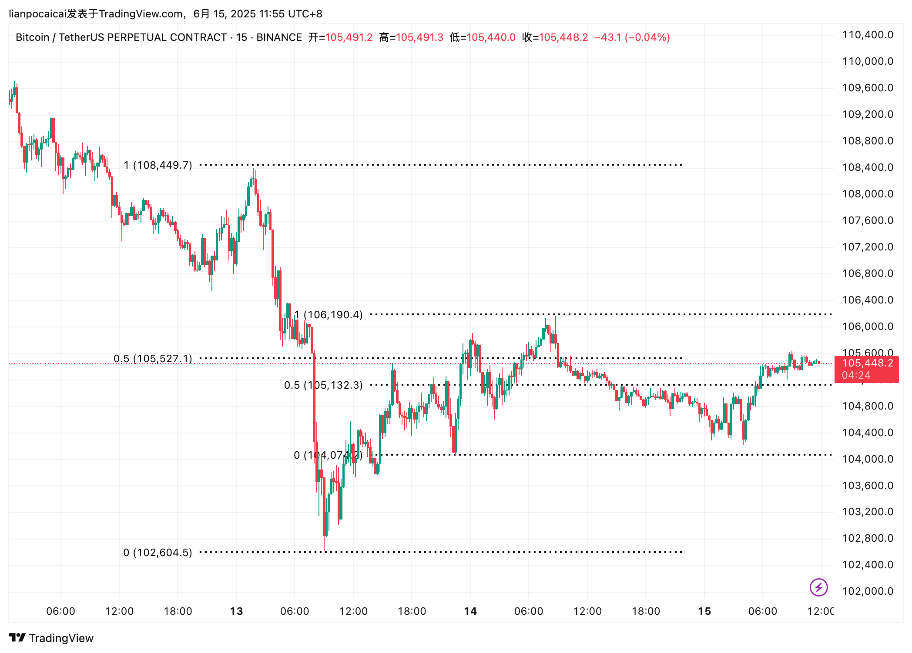
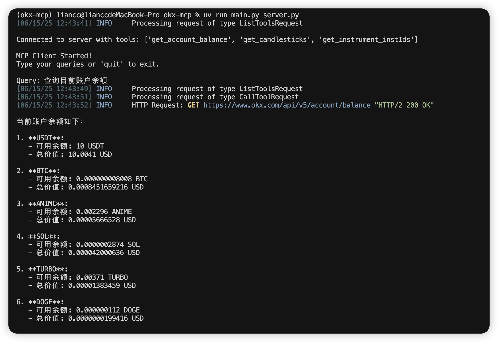
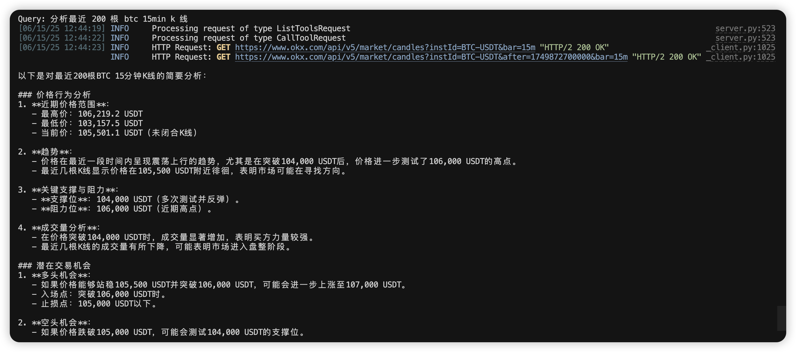

MCP
- date
- 2025-06-14 21:23:28
MCP 介绍
MCP 是一个开放协议，它为应用程序向 LLM 提供上下文的方式进行了标准化。你可以将 MCP 想象成 AI 应用程序的 USB-C 接口。就像 USB-C 为设备连接各种外设和配件提供了标准化的方式一样，MCP 为 AI 模型连接各种数据源和工具提供了标准化的接口。
个人理解就是我们可以通过 MCP 给 AI 添加具备各种功能的 "手臂"，这样 AI 就可以做更多的事情。
之前使用 AI 可以告诉我们做某件事情的"方法\教程"，然后我们人去执行，通过 MCP 我们可以直接让 AI 去直接操作。
MCP 核心采用客户端-服务器架构：
- MCP Clients: 维护与服务器一对一连接的协议客户端
- MCP Servers: 轻量级程序，通过标准的 Model Context Protocol 提供特定能力
类型：
- Resources：允许服务器暴露可以被 clients 读取并用作 LLM 交互上下文的数据和内容
- Tools：使 servers 能够向 clients 暴露可执行功能。通过 tools，LLMs 可以与外部系统交互、执行计算并在现实世界中采取行动。
- ...
本文主要介绍 Tools 的开发使用。
MCP Servers
这里通过 Python 来编写服务端，通过 uv 进行包管理。
| # uv install
curl -LsSf https://astral.sh/uv/install.sh | sh
powershell -ExecutionPolicy ByPass -c "irm https://astral.sh/uv/install.ps1 | iex"
uv init project_name
cd project_name
uv venv
.venv\Scripts\activate
uv add mcp[cli]
|
这里编写一个 okx 的 mcp 服务端，功能：
- 获取实时的指定时间级别的虚拟货币的 k 线数据
- 获取当前交易账户数据
编写的话其实很简单，添加 @mcp.tool 注解，然后函数的名称就是工具的名称，函数的参数和注释介绍同样就是工具的，AI 就可以获取到这些信息，实现调用。
代码如下：
| from typing import Any, List
import okx.MarketData as MarketData
import okx.PublicData as PublicData
import okx.Account as Account
import okx.Trade as Trade
import pandas as pd
from mcp.server.fastmcp import FastMCP
mcp = FastMCP("okx")
flag = "0" # 实盘:0 , 模拟盘:1
apikey = ""
secretkey = ""
passphrase = ""
marketDataAPI = MarketData.MarketAPI(flag=flag)
publicDataAPI = PublicData.PublicAPI(flag=flag)
accountAPI = Account.AccountAPI(apikey, secretkey, passphrase, False, flag)
tradeAPI = Trade.TradeAPI(apikey, secretkey, passphrase, False, flag)
@mcp.tool()
async def get_account_balance() -> Any:
"""
获取交易账户中资金余额信息
:return:
"""
return accountAPI.get_account_balance()["data"]
@mcp.tool()
async def get_candlesticks(instId: str, bar: str, limit: int = 500) -> list:
"""
获取指定产品的 k 线数据
:param instId: 产品 id
:param bar: 时间粒度，[1m/3m/5m/15m/30m/1H/2H/4H]
:param limit: 获取的 k 线数量，默认 500
:return: k 线数据列表
"""
candlesticks = []
min_ts = 0
while len(candlesticks) < limit:
if min_ts == 0:
result = marketDataAPI.get_candlesticks(instId=instId, bar=bar)
else:
result = marketDataAPI.get_candlesticks(instId=instId, bar=bar, after=min_ts)
for item in result.get("data", []):
ts = item[0]
if min_ts == 0 or ts < min_ts:
min_ts = ts
utc_time = pd.to_datetime(int(item[0]), unit='ms')
china_time = utc_time.tz_localize('UTC').tz_convert('Asia/Shanghai')
formatted = {
'datetime': str(china_time),
'ts': int(item[0]),
'open': float(item[1]),
'high': float(item[2]),
'low': float(item[3]),
'close': float(item[4]),
'volume': float(item[5]),
'volume_ccy': float(item[6]),
'volume_quote': float(item[7]),
'is_closed': bool(int(item[8]))
}
candlesticks.append(formatted)
return candlesticks
@mcp.tool()
async def get_instrument_instIds() -> List[str]:
"""
获取 okx 所有可交易产品的 instId
:return: instId 列表
"""
instIds = []
result = publicDataAPI.get_instruments(
instType="SPOT"
)
for item in result.get("data", []):
instIds.append(item["instId"])
return instIds
if __name__ == "__main__":
mcp.run(transport='stdio')
|
MCP Clients
应用程序
有很多程序已经支持了去添加 MCP 工具，这里使用 Cursor：

这里就是运行工具的命令：

然后通过 Agent 模式问答：


大致趋势判断的没啥问题，但是和人分析比不了，后面可以测试下规定一些交易分析的方法策略再测试，目前只是直接分析：



Python
通过 Python 来编写客户端：
- 用户询问，AI 决定使用的工具
- 把工具结果给 AI ，返回最终结果
| import asyncio
import os
from typing import Optional
from contextlib import AsyncExitStack
from mcp import ClientSession, StdioServerParameters
from mcp.client.stdio import stdio_client
from anthropic import Anthropic
from dotenv import load_dotenv
from openai import OpenAI
class MCPClient:
def __init__(self):
# Initialize session and client objects
self.session: Optional[ClientSession] = None
self.exit_stack = AsyncExitStack()
self.client = OpenAI(
api_key=os.getenv("OPENAI_API_KEY", ""),
base_url=os.getenv("OPENAI_BASE_URL", "https://api.deepseek.com")
)
self.model = "deepseek-chat"
async def connect_to_server(self, server_script_path: str):
"""Connect to an MCP server
Args:
server_script_path: Path to the server script (.py or .js)
"""
is_python = server_script_path.endswith('.py')
is_js = server_script_path.endswith('.js')
if not (is_python or is_js):
raise ValueError("Server script must be a .py or .js file")
command = "python" if is_python else "node"
server_params = StdioServerParameters(
command=command,
args=[server_script_path],
env=None
)
stdio_transport = await self.exit_stack.enter_async_context(stdio_client(server_params))
self.stdio, self.write = stdio_transport
self.session = await self.exit_stack.enter_async_context(ClientSession(self.stdio, self.write))
await self.session.initialize()
# List available tools
response = await self.session.list_tools()
tools = response.tools
print("\nConnected to server with tools:", [tool.name for tool in tools])
async def process_query(self, query: str) -> str:
"""处理用户输入，调用模型 + 工具"""
messages = [
{"role": "user", "content": query},
{"role": "system", "content": "你是一位优秀的职业交易员, 擅长通过价格行为对市场进行分析, 属于波段交易者"}
]
response = await self.session.list_tools()
available_tools = [
{
"type": "function",
"function": {
"name": tool.name,
"description": tool.description,
"parameters": tool.inputSchema
}
}
for tool in response.tools
]
final_text = []
tool_results = []
# 首次调用模型
completion = self.client.chat.completions.create(
model=self.model,
messages=messages,
tools=available_tools,
tool_choice="auto",
)
while completion.choices[0].finish_reason == "tool_calls":
choice = completion.choices[0]
tool_call = choice.message.tool_calls[0]
tool_name = tool_call.function.name
tool_args = eval(tool_call.function.arguments)
# 工具执行
tool_result = await self.session.call_tool(tool_name, tool_args)
tool_results.append({"tool": tool_name, "result": tool_result})
messages.append({
"role": "assistant",
"tool_calls": [tool_call]
})
messages.append({
"role": "tool",
"tool_call_id": tool_call.id,
"content": str(tool_result.content)
})
# 再次调用模型
completion = self.client.chat.completions.create(
model=self.model,
messages=messages,
tools=available_tools,
tool_choice="auto",
)
# 最终输出
final_text.append(completion.choices[0].message.content)
return "\n".join(final_text)
async def chat_loop(self):
"""Run an interactive chat loop"""
print("\nMCP Client Started!")
print("Type your queries or 'quit' to exit.")
while True:
try:
query = input("\nQuery: ").strip()
if query.lower() == 'quit':
break
response = await self.process_query(query)
print("\n" + response)
except Exception as e:
print(f"\nError: {str(e)}")
async def cleanup(self):
"""Clean up resources"""
await self.exit_stack.aclose()
async def main():
if len(sys.argv) < 2:
print("Usage: python client.py <path_to_server_script>")
sys.exit(1)
client = MCPClient()
try:
await client.connect_to_server(sys.argv[1])
await client.chat_loop()
finally:
await client.cleanup()
if __name__ == "__main__":
import sys
asyncio.run(main())
|


参考链接
- https://mcp-docs.cn/introduction
{kind=link}
{kind=link}
{kind=link}
{kind=link}
{kind=link}
{kind=link}
{kind=link}
{kind=link}
{kind=link}